Code
plot_series(df, target_col = "GDP", xlabel="Year [1Y]", ylabel="$US", title="GDP")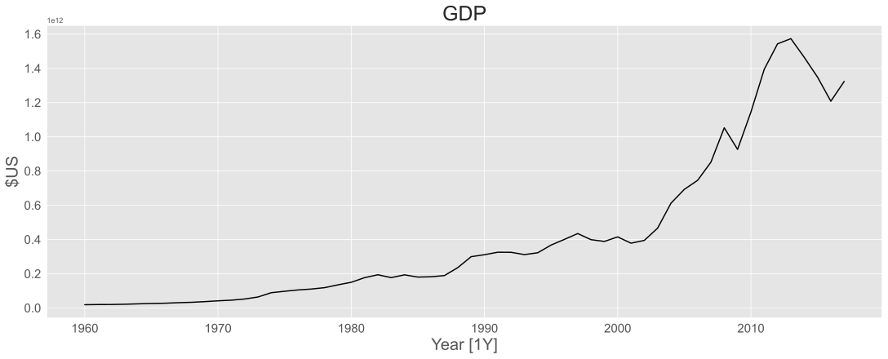
MATH840 | Time Series | Week 2
Kyiv School of Economics
url = '../data/aus_retail.csv'
aus_retail = pd.read_csv(url, parse_dates=["Month"])
print_retail = (
aus_retail.query('Industry == "Newspaper and book retailing"')
.groupby(["Month"], as_index=False)["Turnover"]
.sum()
)
print_retail["ds"] = print_retail["Month"].dt.year
print_retail = print_retail.groupby("ds")["Turnover"].sum().reset_index()
aus_economy = global_economy.query('unique_id == "Australia"')
df = pd.merge(aus_economy, print_retail, on="ds", how="left")
df["Adjusted_turnover"] = (df["Turnover"] / df["CPI"]) * 100
df.dropna(inplace=True)
fig, axes = plt.subplots(nrows=2, ncols=1)
sns.lineplot(data=df, x='ds', y='Turnover', ax=axes[0], color='black',
label="Turnover")
sns.lineplot(data=df, x='ds', y='Adjusted_turnover', ax=axes[1],
color='black', label="Adjusted_turnover")
axes[0].set_xlabel('')
axes[1].set_xlabel("Year")
axes[0].set_ylabel("")
axes[1].set_ylabel("")
fig.suptitle("Turnover: Australian print media industry")
fig.supylabel("$AU")
plt.show()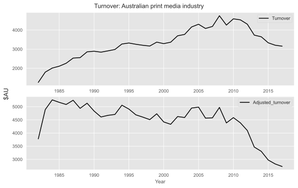
If the data show different variation at different levels of the series, then a transformation may be useful to stabilize the variance.
Denote original observations as \(y_1, y_2, \ldots, y_T\) and transformed observations as \(w_1, w_2, \ldots, w_T\).
Mathematical transformations for variance stabilization
| Transformation | Formula | |
|---|---|---|
| Square root | \(w_t = \sqrt{y_t}\) | \(\downarrow\) |
| Cube root | \(w_t = \sqrt[3]{y_t}\) | Increasing |
| Logarithm | \(w_t = \log(y_t)\) | strange |
Logarithms, in particular, are useful because they are more interpretable: changes in the log scale correspond to relative (percentage) changes in the original scale.
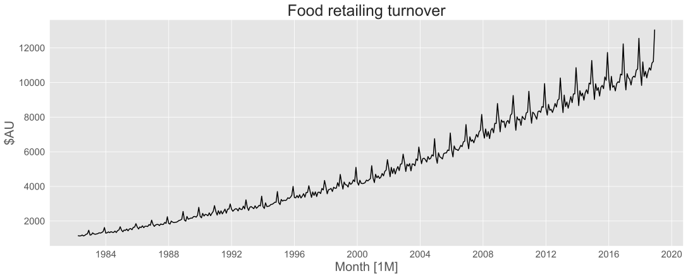
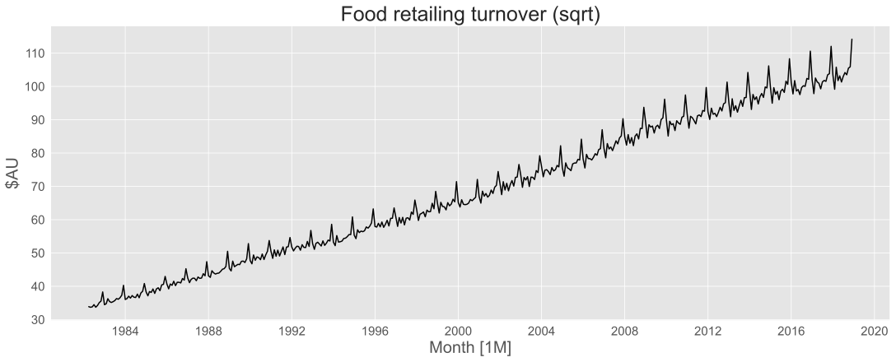
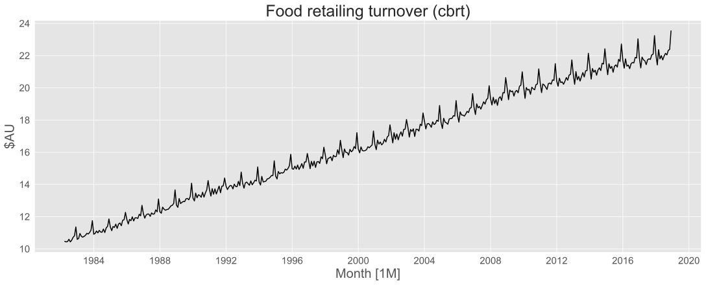
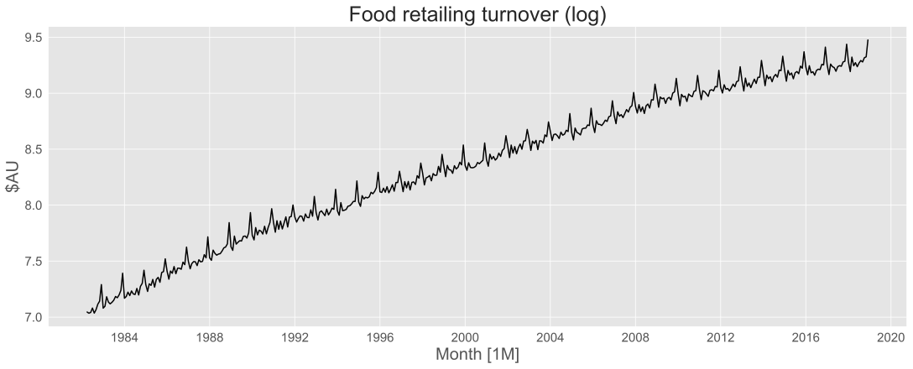
\(\frac{-1}{y_t}\) transformation is useful when the series shows a rapid increase.
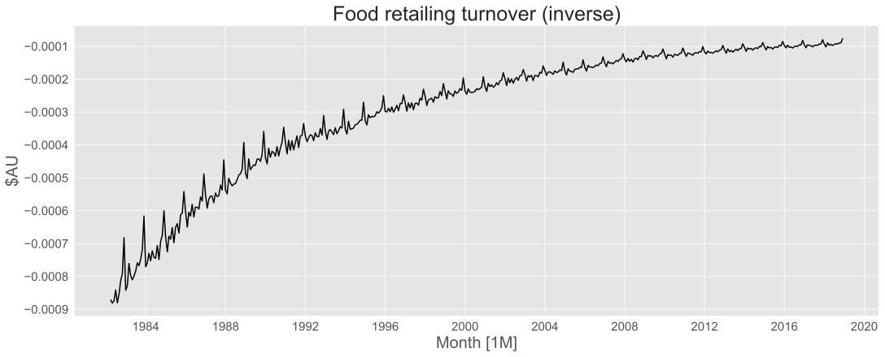
Each of the above transformations is a special case of the Box-Cox transformation:
\[ w_t = \begin{cases}\frac{\text{sign}(y_t)|y_t|^{\lambda} - 1}{\lambda}, & \text{if } \lambda \neq 0 \\\\ \log(y_t), & \text{if } \lambda = 0\end{cases} \]
from matplotlib.animation import FuncAnimation, PillowWriter
fig, ax = plt.subplots()
line, = ax.plot([], [], color='black')
time_text = ax.text(0.05, 0.9, '', transform=ax.transAxes)
def init():
ax.set_xlabel("Month [1M]")
ax.set_ylabel("Turnover")
ax.set_title("Box-Cox Transformation of Food Retailing Turnover")
line.set_data([], [])
return line, time_text
def update(frame):
lmbda = 1 - frame * 0.02
transformed_turnover = boxcox(food['Turnover'].values, lmbda)
line.set_data(food['Month'], transformed_turnover)
ax.relim()
ax.autoscale_view()
time_text.set_text(f'λ = {lmbda:.2f}')
fig.canvas.draw()
return line, time_text
ani = FuncAnimation(fig, update, frames=101, init_func=init, blit=True, interval=100)
# Save the animation
writer = PillowWriter(fps=10)
ani.save("img/boxcox_animation.gif", writer=writer)
plt.close(fig)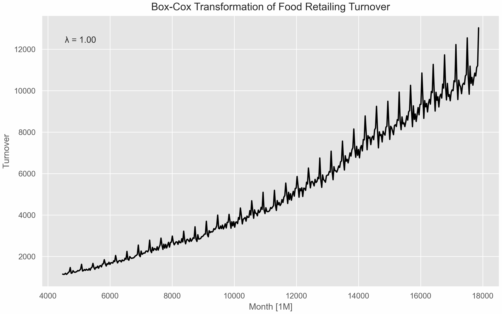
Guerrero transformation: ratio of the standard deviation to the mean raised to a certain power is constant.
\[ \text{VAR}(X)^\frac{1}{2} / \text{E}(X)^{1-\lambda} = a \]
The series is divided into subgroups (e.g., by year). For each subgroup, the mean \(\bar{Z}_h\) and standard deviation \(S_h\) are calculated.
Algorithm:
The coefficient of variation (CV) is defined as the ratio of the standard deviation to the mean: \[ \text{CV} = \frac{S}{\bar{Z}} \text{, where } S = \text{std}(X), \bar{Z} = \text{mean}(X) \]
Concept:
The non-linear relationship \(S_h ≈ a \times \bar{Z}_h^{(1-λ)}\) can be linearized by taking the natural logarithm: \[ \log(S_h) ≈ \log(a) + (1-λ) \times \log(\bar{Z}_h) \]
This is a simple linear regression \(Y = \beta_0 + \beta_1 \times X\), where:
Algorithm:
optim_lambda = boxcox_lambda(
food['Turnover'].to_numpy(),
method='loglik',
season_length=12
)
food['Turnover_boxcox'] = boxcox(food['Turnover'].to_numpy(), 0.0524)
rounded_lambda = round(optim_lambda, 2)
plot_series(
food,
target_col='Turnover_boxcox',
time_col='Month',
xlabel="Month [1M]",
ylabel="Turnover",
title=f"Food retailing turnover (Box-Cox, λ={0.0524})"
)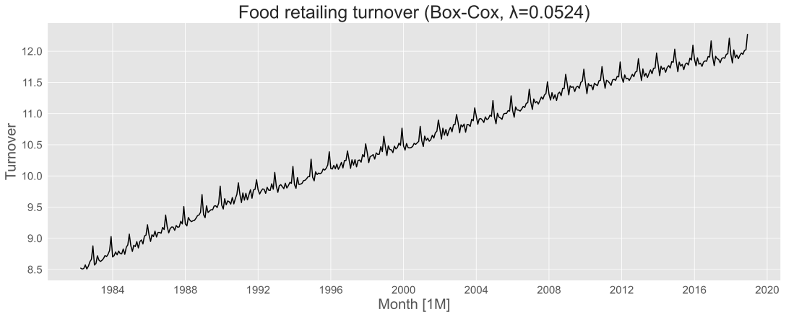
np.log1p() can be used for zero values (equivalent to Box-Cox with \(\lambda=0\) and shifting data by 1).Recall
\[y_t = f(T_t, S_t, R_t)\]
Where:
Additive model: \(f(T_t, S_t, R_t) = T_t + S_t + R_t\)
Multiplicative model: \(f(T_t, S_t, R_t) = T_t \times S_t \times R_t\)
\[y_t = T_t \times S_t \times R_t \implies \log(y_t) = \log(T_t) + \log(S_t) + \log(R_t)\]
url = '../data/us_employment.csv'
us_employment = pd.read_csv(url, parse_dates=["ds"])
us_retail_employment = us_employment.query(
'(unique_id == "Retail Trade") & (ds >= "1990-01-01")'
)
plot_series(us_retail_employment,
xlabel="Month [1M]",
ylabel="Persons (thousands)",
title="Total employment in US retail")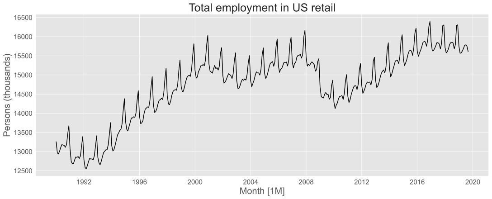
stl = STL(us_retail_employment["y"], period=12)
res = stl.fit()
dcmp = pd.DataFrame({
"ds": us_retail_employment["ds"],
"data": us_retail_employment["y"],
"trend": res.trend,
"seasonal": res.seasonal,
"remainder": res.resid
}).reset_index(drop=True)
(
GT(dcmp.head())
.fmt_number(columns=["data", "trend", "seasonal", "remainder"], decimals=3)
)| ds | data | trend | seasonal | remainder |
|---|---|---|---|---|
| 1990-01-01 | 13,255.800 | 13,296.249 | −3.700 | −36.749 |
| 1990-02-01 | 12,966.300 | 13,276.085 | −288.398 | −21.387 |
| 1990-03-01 | 12,938.200 | 13,255.663 | −306.658 | −10.805 |
| 1990-04-01 | 13,012.300 | 13,234.986 | −235.775 | 13.089 |
| 1990-05-01 | 13,108.300 | 13,214.071 | −115.399 | 9.628 |
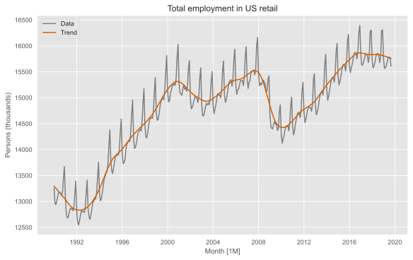
fig, axes = plt.subplots(nrows=4, ncols=1, sharex=True, figsize=(8, 6))
sns.lineplot(data=dcmp, x=dcmp.index, y="data", ax=axes[0])
sns.lineplot(data=dcmp, x=dcmp.index, y="trend", ax=axes[1])
sns.lineplot(data=dcmp, x=dcmp.index, y="seasonal", ax=axes[2])
sns.lineplot(data=dcmp, x=dcmp.index, y="remainder", ax=axes[3])
axes[0].set_ylabel("Employed")
axes[1].set_ylabel("trend")
axes[2].set_ylabel("seasonal")
axes[3].set_ylabel("remainder")
fig.suptitle("STL decomposition")
fig.subplots_adjust(top=0.90)
fig.text(0.5, 0.95, "Employed = trend + seasonal + remainder", ha='center')
plt.xlabel("")
plt.show()
plt.show()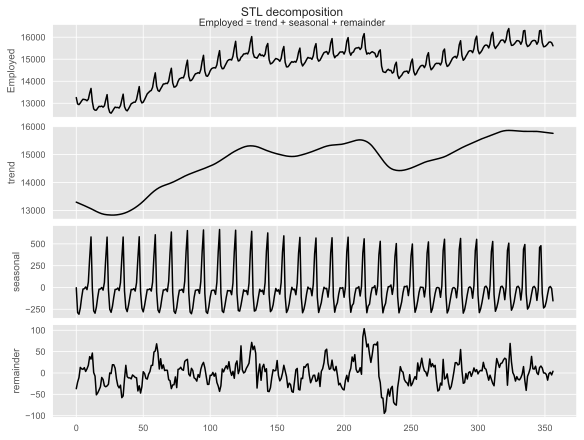
dcmp["Month"] = pd.to_datetime(dcmp["ds"])
dcmp["year"] = dcmp["ds"].dt.year
dcmp["month"] = dcmp["Month"].dt.month_name()
dcmp["month"] = pd.Categorical(
dcmp["month"],
categories=[
"January", "February", "March", "April", "May", "June",
"July", "August", "September", "October", "November", "December",
],
ordered=True,
)
fig, axes = plt.subplots(nrows=1, ncols=12, sharey=True)
for i, month in enumerate(dcmp["month"].cat.categories):
month_data = dcmp.query("month == @month")
mean_cost = month_data["seasonal"].mean()
axes[i].plot(month_data["year"], month_data["seasonal"], color="black")
axes[i].axhline(
mean_cost, color="blue", linestyle="-", linewidth=1, label="Average"
)
axes[i].set_title(month[:3])
axes[i].set_xlabel("")
axes[i].tick_params(axis='x', rotation=90)
if i == 0:
axes[i].set_ylabel("Employed")
else:
axes[i].set_yticklabels([])
fig.suptitle("US Employment in Retail Trade")
fig.text(0.5, -0.05, "Month", ha="center")
fig.subplots_adjust(wspace=0.2)
fig.show()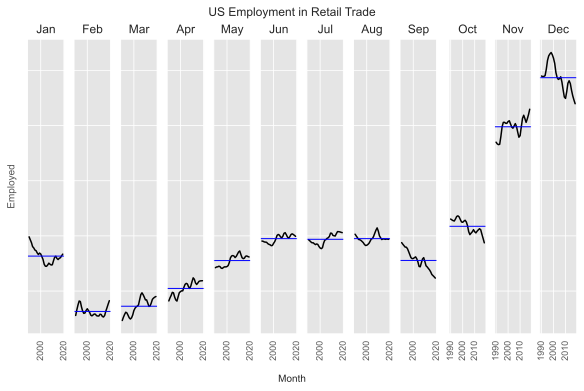
dcmp["seasonally_adjusted"] = dcmp["data"] - dcmp["seasonal"]
fig, ax = plt.subplots()
sns.lineplot(data=dcmp, x="ds", y="seasonally_adjusted", color=red_pink)
sns.lineplot(data=dcmp, x="ds", y="data", color="gray", alpha=0.5)
ax.set_title("Seasonally adjusted employment in US retail")
ax.set_xlabel("Month [1M]")
ax.set_ylabel("Persons (thousands)")
plt.show()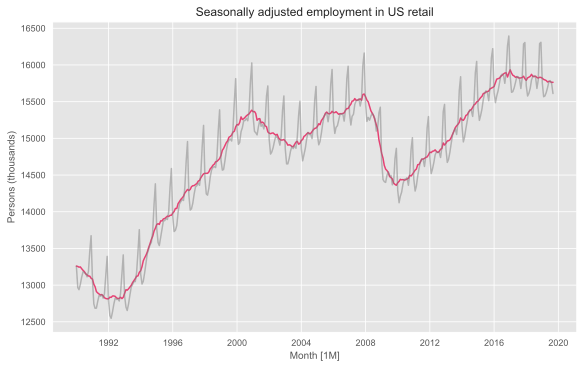
The simplest estimate of the trend-cycle component is a moving average.
\(m\)-MA
\[ \hat{T}_t = \frac{1}{m} \sum_{i=-k}^{k} y_{t+i} \]
Where \(k=\frac{m-1}{2}\) for odd \(m\) and \(k=\frac{m}{2}\) for even \(m\).
If \(m=7\) (odd), then \(k=\frac{7-1}{2}=3\). It’s a centered 7-MA:
\[ \hat{T}_t = \frac{1}{7} (y_{t-3} + y_{t-2} + y_{t-1} + y_t + y_{t+1} + y_{t+2} + y_{t+3}) \]
jp_exports = jp_exports.sort_values("ds").reset_index(drop=True)
for window in [3, 5, 7, 11, 13, 15]:
col_name = f"{window}_MA"
jp_exports[col_name] = jp_exports["Exports"].rolling(window=window, center=True).mean()
(
GT(jp_exports.head(10))
.fmt_number(columns=["Exports", "3_MA", "5_MA", "7_MA", "11_MA", "13_MA", "15_MA"], decimals=2)
)| unique_id | ds | Exports | 3_MA | 5_MA | 7_MA | 11_MA | 13_MA | 15_MA |
|---|---|---|---|---|---|---|---|---|
| Japan | 1960 | 10.72 | ||||||
| Japan | 1961 | 9.28 | 9.81 | |||||
| Japan | 1962 | 9.43 | 9.25 | 9.59 | ||||
| Japan | 1963 | 9.04 | 9.32 | 9.55 | 9.87 | |||
| Japan | 1964 | 9.49 | 9.68 | 9.81 | 9.71 | |||
| Japan | 1965 | 10.52 | 10.20 | 9.86 | 9.83 | 9.98 | ||
| Japan | 1966 | 10.58 | 10.25 | 10.07 | 9.99 | 10.02 | 10.09 | |
| Japan | 1967 | 9.65 | 10.11 | 10.28 | 10.18 | 10.10 | 10.00 | 10.25 |
| Japan | 1968 | 10.11 | 10.11 | 10.25 | 10.43 | 10.12 | 10.29 | 10.35 |
| Japan | 1969 | 10.56 | 10.34 | 10.38 | 10.38 | 10.48 | 10.51 | 10.60 |
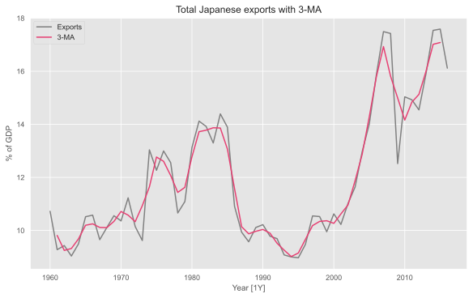
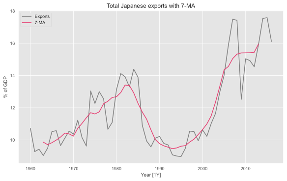
fig, ax = plt.subplots()
sns.lineplot(data=jp_exports, x="ds", y="Exports", label="Exports", color="gray")
sns.lineplot(data=jp_exports, x="ds", y="13_MA", label="13-MA", color=red_pink)
ax.set_title("Total Japanese exports with 13-MA")
ax.set_xlabel("Year [1Y]")
ax.set_ylabel("% of GDP")
plt.show()fig, ax = plt.subplots()
sns.lineplot(data=jp_exports, x="ds", y="Exports", label="Exports", color="gray")
sns.lineplot(data=jp_exports, x="ds", y="15_MA", label="15-MA", color=red_pink)
ax.set_title("Total Japanese exports with 15-MA")
ax.set_xlabel("Year [1Y]")
ax.set_ylabel("% of GDP")
plt.show()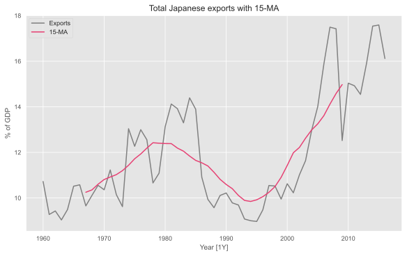
So a MA is an avareage of nearby values.
Why is there no estimate at endpoints?
The order of MA
4-MA:
\[\frac{1}{4} (y_{t-2} + y_{t-1} + y_t + y_{t+1})\]
or \[\frac{1}{4} (y_{t-1} + y_t + y_{t+1} + y_{t+2})\]
Solution: take a further 2-MA to center it.
\[ \hat{T}_t = \frac{1}{2} \left \{ \frac{1}{4} (y_{t-2} + y_{t-1} + y_t + y_{t+1}) + \frac{1}{4} (y_{t-1} + y_t + y_{t+1} + y_{t+2}) \right \} \\ = \frac{1}{8}y_{t-2} + \frac{1}{4}y_{t-1} + \frac{1}{4}y_t + \frac{1}{4}y_{t+1} + \frac{1}{8}y_{t+2} \]
| Year | Data | 4-MA | 2 x 4-MA |
|---|---|---|---|
| 1992 Q1 | 443.00 | ||
| 1992 Q2 | 410.00 | ||
| 1992 Q3 | 420.00 | 451.25 | |
| 1992 Q4 | 532.00 | 448.75 | 450.00 |
| 1993 Q1 | 433.00 | 451.50 | 450.12 |
| 1993 Q2 | 421.00 | 449.00 | 450.25 |
| 1993 Q3 | 410.00 | 444.00 | 446.50 |
| 1993 Q4 | 512.00 | 448.00 | 446.00 |
| … | … | 438.00 | 443.00 |
| … | … | … | … |
A moving average of the same length as the season removes the seasonal pattern.
\[ \hat{T}_t = \frac{1}{24}y_{t-6} + \frac{1}{12}y_{t-5} + \dots + \frac{1}{12}y_{t+5} + \frac{1}{24}y_{t+6} \]
us_retail_employment_ma = us_retail_employment.copy()
us_retail_employment_ma["12-MA"] = (
us_retail_employment_ma["y"].rolling(window=12, center=True).mean()
)
us_retail_employment_ma["2x12-MA"] = (
us_retail_employment_ma["12-MA"].rolling(window=2, center=True).mean()
)
fig, ax = plt.subplots()
sns.lineplot(data=us_retail_employment_ma, x="ds", y="y", label="Data",
color="grey")
sns.lineplot(
data=us_retail_employment_ma, x="ds", y="2x12-MA", label="2x12-MA",
color="#D55E00"
)
ax.set_title("Total employment in US retail")
ax.set_xlabel("Month [1M]")
ax.set_ylabel("Persons (thousands)")
plt.show()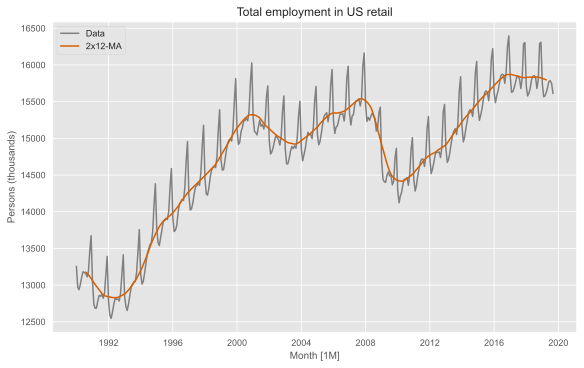
Additive decomposition: \(y_t = T_t + S_t + R_t = \hat{T}_t + \hat{S}_t + \hat{R}_t\)
Multiplicative decomposition: \(y_t = T_t \times S_t \times R_t = \hat{T}_t \times \hat{S}_t \times \hat{R}_t\)
Compute seasonal component \(\hat{S}_t\):
De-trend the series:
Additive model: \(\hat{R}_t = y_t - \hat{T}_t - \hat{S}_t\)
Multiplicative model: \(\hat{R}_t = y_t / (\hat{T}_t \times \hat{S}_t)\)
Classical decomposition
dcmp_classical = seasonal_decompose(
us_retail_employment["y"], model="additive", period=12
)
dcmp = pd.DataFrame({
"ds": us_retail_employment["ds"],
"data": us_retail_employment["y"],
"trend": dcmp_classical.trend,
"seasonal": dcmp_classical.seasonal,
"remainder": dcmp_classical.resid
}).reset_index(drop=True)
fig, axes = plt.subplots(nrows=4, ncols=1, sharex=True, figsize=(8, 6))
sns.lineplot(data=dcmp, x=dcmp.index, y="data", ax=axes[0])
sns.lineplot(data=dcmp, x=dcmp.index, y="trend", ax=axes[1])
sns.lineplot(data=dcmp, x=dcmp.index, y="seasonal", ax=axes[2])
sns.lineplot(data=dcmp, x=dcmp.index, y="remainder", ax=axes[3])
axes[0].set_ylabel("Employed")
axes[1].set_ylabel("trend")
axes[2].set_ylabel("seasonal")
axes[3].set_ylabel("remainder")
fig.suptitle("Classical additive decomposition: US Retail Employment")
fig.subplots_adjust(top=0.90)
fig.text(0.5, 0.95, "Employed = trend + seasonal + remainder", ha='center')
plt.xlabel("")
plt.show()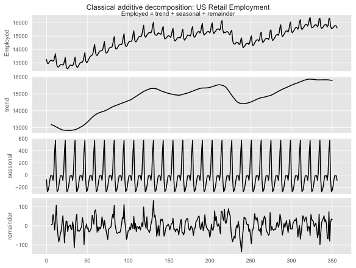
dcmp_classical = seasonal_decompose(
us_retail_employment["y"], model="multiplicative", period=12
)
dcmp = pd.DataFrame({
"ds": us_retail_employment["ds"],
"data": us_retail_employment["y"],
"trend": dcmp_classical.trend,
"seasonal": dcmp_classical.seasonal,
"remainder": dcmp_classical.resid
}).reset_index(drop=True)
fig, axes = plt.subplots(nrows=4, ncols=1, sharex=True, figsize=(8, 6))
sns.lineplot(data=dcmp, x=dcmp.index, y="data", ax=axes[0])
sns.lineplot(data=dcmp, x=dcmp.index, y="trend", ax=axes[1])
sns.lineplot(data=dcmp, x=dcmp.index, y="seasonal", ax=axes[2])
sns.lineplot(data=dcmp, x=dcmp.index, y="remainder", ax=axes[3])
axes[0].set_ylabel("Employed")
axes[1].set_ylabel("trend")
axes[2].set_ylabel("seasonal")
axes[3].set_ylabel("remainder")
fig.suptitle("Classical multiplicative decomposition: US Retail Employment")
fig.subplots_adjust(top=0.90)
fig.text(0.5, 0.95, "Employed = trend × seasonal × remainder", ha='center')
plt.xlabel("")
plt.show()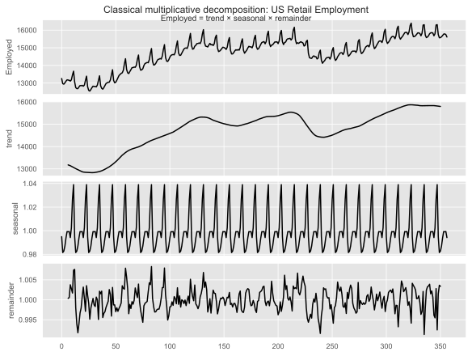
Loess (Locally Weighted Regression) is the smoothing method that powers the entire STL procedure.
x, a neighborhood of q nearest points is selected.u is the normalized distance to the neighbor. Closer points get much more weight.x is the smoothed value.STL uses an elegant two-loop structure to iteratively refine the components.
n(i) times (typically 1 or 2 passes).n(o) times.A single pass of the inner loop consists of two main stages. Let \(T_v^{(k)}\) and \(S_v^{(k)}\) be the estimates at iteration \(k\).
The outer loop is designed to reduce the influence of outliers.
Calculate Remainders after an inner loop pass: \[ R_v = Y_v - T_v - S_v \]
Calculate Robustness Weights \(\rho_v\) for each observation:
B: \[ \rho_v = B(|R_v|/h) \]B is defined as: \[ B(u) = (1 - u^2)^2 \quad \text{for } 0 \le u < 1, \text{ and } 0 \text{ for } u \ge 1 \]Re-run Inner Loop: The next inner loop uses these weights \(\rho_v\) during the Loess smoothing steps, effectively down-weighting or ignoring outliers.
The user has control over 6 main parameters:
n(p): The period of the seasonality (e.g., 12 for monthly, 365 for daily).n(i): Number of inner loop passes (usually 1 or 2).n(o): Number of outer (robustness) loop passes (0 if no robustness is needed).Smoothing Parameters (Loess window sizes):
n(s): The smoothing parameter for the seasonal component. This is the most important parameter.
n(t): The smoothing parameter for the trend component.n(l): The smoothing parameter for the low-pass filter.from matplotlib.animation import FuncAnimation, PillowWriter
# Setup figure and axes
fig, axes = plt.subplots(nrows=4, ncols=1, sharex=True, figsize=(8, 6))
seasonal_values = range(5, 57, 2) # from 5 to 55 with step 2
def update(seasonal_window):
# Clear previous plots
for ax in axes:
ax.cla()
# Perform STL decomposition
stl = STL(us_retail_employment["y"], period=12, seasonal=seasonal_window, robust=True)
res_stl = stl.fit()
# Create a dataframe with the results
dcmp = pd.DataFrame({
"ds": us_retail_employment["ds"],
"data": us_retail_employment["y"],
"trend": res_stl.trend,
"seasonal": res_stl.seasonal,
"remainder": res_stl.resid
}).reset_index(drop=True)
# Plot components
sns.lineplot(data=dcmp, x=dcmp.index, y="data", ax=axes[0], color='gray')
sns.lineplot(data=dcmp, x=dcmp.index, y="trend", ax=axes[1])
sns.lineplot(data=dcmp, x=dcmp.index, y="seasonal", ax=axes[2])
sns.lineplot(data=dcmp, x=dcmp.index, y="remainder", ax=axes[3])
# Set titles and labels
axes[0].set_ylabel("Employed")
axes[1].set_ylabel("Trend")
axes[2].set_ylabel("Seasonal")
axes[3].set_ylabel("Remainder")
plt.xlabel("")
# Add text for the current seasonal window
axes[2].text(0.05, 0.8, f'seasonal = {seasonal_window}', transform=axes[2].transAxes, fontsize=12, bbox=dict(facecolor='white', alpha=0.8))
fig.suptitle("STL Decomposition: Varying Seasonal Window")
fig.subplots_adjust(top=0.90)
return fig,
# Create animation
ani = FuncAnimation(fig, update, frames=seasonal_values, blit=False, interval=200)
# Save the animation
writer = PillowWriter(fps=5)
ani.save("img/stl_seasonal_animation.gif", writer=writer)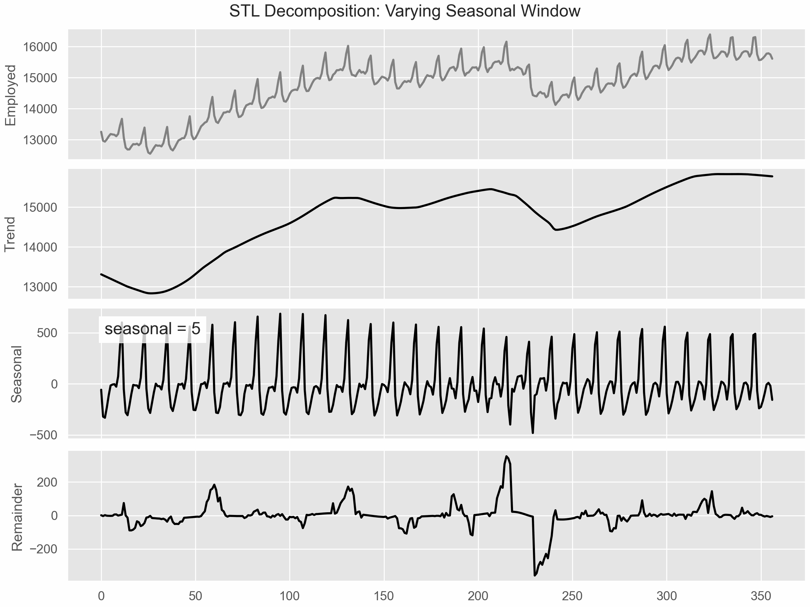
# Setup figure and axes
fig, axes = plt.subplots(nrows=4, ncols=1, sharex=True, figsize=(8, 6))
trend_values = range(13, len(us_retail_employment)//2, 4)
def update(trend_values):
# Clear previous plots
for ax in axes:
ax.cla()
# Perform STL decomposition
stl = STL(us_retail_employment["y"], period=12, seasonal=13, trend=trend_values, robust=True)
res_stl = stl.fit()
# Create a dataframe with the results
dcmp = pd.DataFrame({
"ds": us_retail_employment["ds"],
"data": us_retail_employment["y"],
"trend": res_stl.trend,
"seasonal": res_stl.seasonal,
"remainder": res_stl.resid
}).reset_index(drop=True)
# Plot components
sns.lineplot(data=dcmp, x=dcmp.index, y="data", ax=axes[0], color='gray')
sns.lineplot(data=dcmp, x=dcmp.index, y="trend", ax=axes[1])
sns.lineplot(data=dcmp, x=dcmp.index, y="seasonal", ax=axes[2])
sns.lineplot(data=dcmp, x=dcmp.index, y="remainder", ax=axes[3])
# Set titles and labels
axes[0].set_ylabel("Employed")
axes[1].set_ylabel("Trend")
axes[2].set_ylabel("Seasonal")
axes[3].set_ylabel("Remainder")
plt.xlabel("")
# Add text for the current trend window
axes[1].text(0.05, 0.8, f'trend = {trend_values}', transform=axes[1].transAxes, fontsize=12, bbox=dict(facecolor='white', alpha=0.8))
fig.suptitle("STL Decomposition: Varying Trend Window")
fig.subplots_adjust(top=0.90)
return fig,
# Create animation
ani = FuncAnimation(fig, update, frames=trend_values, blit=False, interval=200)
# Save the animation
writer = PillowWriter(fps=5)
ani.save("img/stl_trend_animation.gif", writer=writer)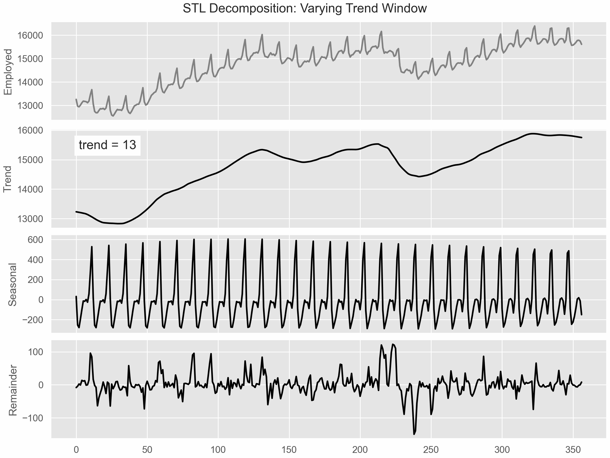
Last year a seasonal naive forecast placed 5th of 19 in the final project. Now you can say why in one sentence: electricity demand is dominated by a large, stable seasonal component, and seasonal naive copies exactly that component forward.
| Method | Implicit claim about the components |
|---|---|
| Mean | No trend, no seasonality. The level is constant, the rest is noise. |
| Naive | The trend is a random walk; no seasonality worth carrying forward. |
| Drift | The trend is roughly linear and continues; seasonality is negligible. |
| Seasonal naive | Seasonality is stable and dominates; the trend moves slowly over the horizon. |
So “which benchmark will be hard to beat?” is not a forecasting question. It asks which component carries the variance — which is what a decomposition tells you.
STL splits \(y_t = T_t + S_t + R_t\). A component is strong when removing it leaves much less variance than keeping it:
\[ F_T = \max\left(0,\; 1 - \frac{\operatorname{Var}(R_t)}{\operatorname{Var}(T_t + R_t)}\right) \qquad F_S = \max\left(0,\; 1 - \frac{\operatorname{Var}(R_t)}{\operatorname{Var}(S_t + R_t)}\right) \]
Every series in three collections you have met — retail turnover, domestic tourism, US employment. Hold out the last year, decompose the training part, run all four simple methods, record the winner.
import numpy as np
import pandas as pd
from statsmodels.tsa.seasonal import STL
def benchmark_forecasts(y, h, m):
"""The same four lines from Week 1."""
T = len(y)
return {
"mean": np.repeat(y.mean(), h),
"naive": np.repeat(y[-1], h),
"snaive": np.array([y[-m + (i % m)] for i in range(h)]),
"drift": y[-1] + np.arange(1, h + 1) * (y[-1] - y[0]) / (T - 1),
}
def strengths(y, m):
"""F_T and F_S from an STL decomposition."""
d = STL(y, period=m, robust=True).fit()
R, T, S = d.resid, d.trend, d.seasonal
return (max(0.0, 1 - R.var() / (T + R).var()),
max(0.0, 1 - R.var() / (S + R).var()))
results = []
def evaluate(y, m, h):
y = np.asarray(y, float)
if len(y) < max(3 * m, 30) or np.isnan(y).any() or y.std() == 0:
return
train, test = y[:-h], y[-h:]
try:
F_T, F_S = strengths(train, m)
except Exception:
return
rmse = {k: np.sqrt(np.mean((test - v) ** 2))
for k, v in benchmark_forecasts(train, h, m).items()}
results.append({"F_T": F_T, "F_S": F_S, "winner": min(rmse, key=rmse.get)})
retail = pd.read_csv("../data/aus_retail.csv", parse_dates=["Month"])
for _, g in retail.groupby(["State", "Industry"]):
evaluate(g.sort_values("Month")["Turnover"].to_numpy(), m=12, h=12)
trips = pd.read_csv("../data/tourism.csv", parse_dates=["ds"])
for _, g in trips.groupby(["State", "Purpose"]):
evaluate(g.groupby("ds")["y"].sum().sort_index().to_numpy(), m=4, h=8)
jobs = pd.read_csv("../data/us_employment.csv", parse_dates=["ds"])
for _, g in jobs.groupby("unique_id"):
evaluate(g.sort_values("ds")["y"].to_numpy(), m=12, h=12)
experiment = pd.DataFrame(results)import matplotlib.pyplot as plt
palette = {"snaive": red_pink, "drift": turquoise, "naive": orange, "mean": purple}
fig, ax = plt.subplots(figsize=(11, 3.6))
for name, g in experiment.groupby("winner"):
ax.scatter(g["F_S"], g["F_T"], s=22, alpha=0.75,
color=palette[name], label=f"{name} ({len(g)})")
ax.axvline(0.6, ls="--", color="grey", lw=1)
ax.set_xlabel("strength of seasonality $F_S$")
ax.set_ylabel("strength of trend $F_T$")
ax.legend(title="best simple method", loc="lower left", fontsize=8)
ax.grid(alpha=0.3)
plt.show()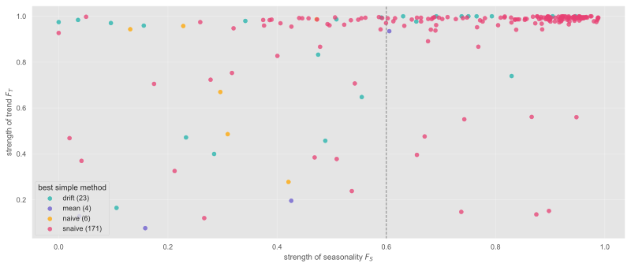
Right of the line (\(F_S \geq 0.6\)) seasonal naive wins 92% of the time; left of it, 64%. Seasonality is the exploitable structure; trend is nearly universal. And because the bar swings that much, your benchmark is the best of the four on a validation window — fixing it to seasonal naive would be an unfairly hard bar on some series and an unfairly soft one on others.
Today’s lab is the first graded one. On your own series:
Next week you run them and find out. The prediction is marked on the reasoning, not on being right.

Comments on classical decomposition